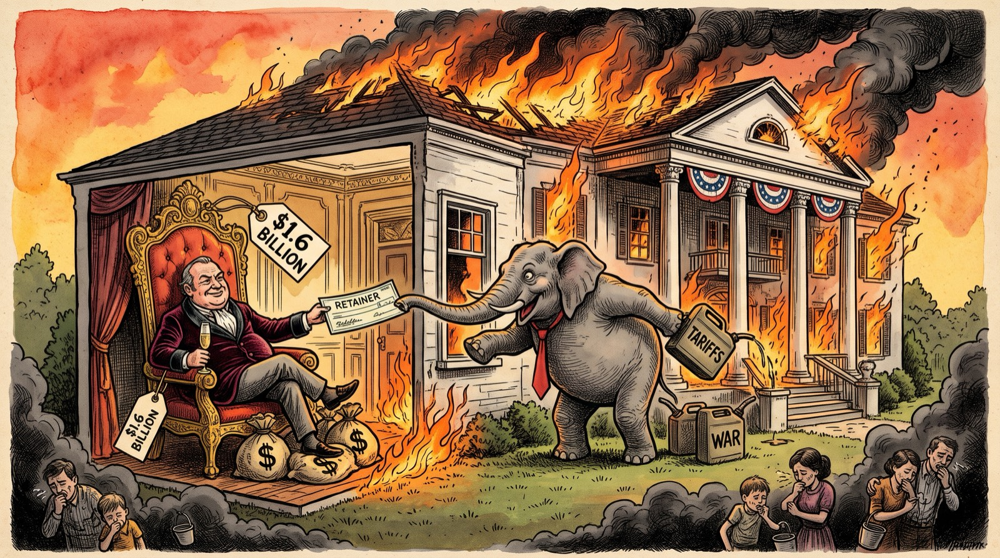
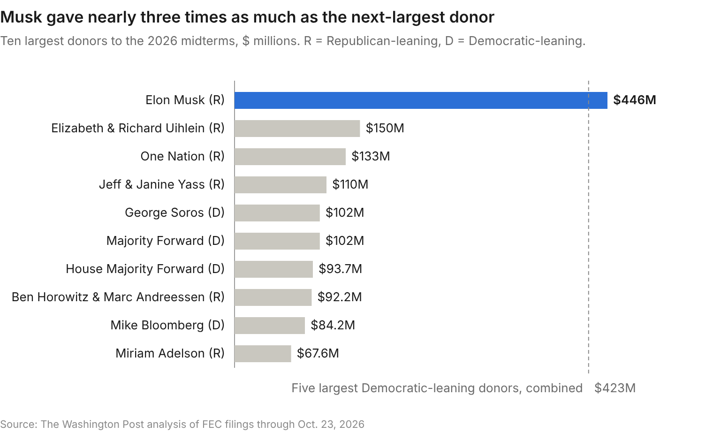

A post crossed my feed today that is worth discussing.
"I cannot wrap my head around the endgame here. If you destroy the planet, crash the global economy, and leave ordinary people too broke to buy anything, what exactly are billionaires planning to do with all that money? Sit in underground bunkers staring at bank balances while the world falls apart? Wealth is only valuable when there's a functioning society around it. So what exactly are they trying to win?"
It landed the same week The Washington Post published its tally of the 50 biggest donors of the 2026 midterms. Together they have put $2.77 billion into this cycle, most of it through super PACs that can take unlimited sums. Elon Musk alone gave $446 million, a record for any individual donor in modern American history.
The viral post treats billionaire behavior as a riddle. But it isn't one. Every donor on that list is rationally buying a room in a house. The catch? Most are buying those rooms from the party actively setting the house on fire.

The price of admission
The money leans Republican two to one: $1.67 billion from Republican-leaning donors, $832 million from Democratic-leaning ones and $264 million from special interests.

Musk alone gave more than the five biggest Democratic-leaning donors combined, and about 27% of all the Republican-leaning money. Relative to his fortune, it is pocket change. At roughly $1 trillion, $446 million is 0.045% of his wealth.
For the median American family, worth $215,900 in the Fed's latest survey, the same share is about $96. A record-breaking intervention in national politics costs him what a family spends on dinner out.
This is not a one-party story. George Soros ($102 million), Mike Bloomberg ($84 million) and Reid Hoffman ($41 million) are on the list, along with Democratic dark-money groups. But the scale is lopsided, and the biggest checkbook in modern American politics points one way.
What they're buying
If you read the Post's list not as a political roster but as an investment portfolio, the strategy becomes glaringly obvious. These aren't broad ideological crusades; they are narrow bets with highly specific payoffs.
- AI. Andreessen Horowitz's founders ($50 million) and OpenAI's Greg Brockman ($25 million) bankroll Leading the Future, which wants one federal AI rulebook overriding state laws. The Senate stripped that preemption from last year's budget bill, 99 to 1. The other side has deep pockets too: Anthropic gave $20 million to a group backing AI guardrails.
- Taxes. The broadest prize. CBO estimates last year's reconciliation law will cost the poorest tenth of households about $1,200 a year, mostly through Medicaid and SNAP cuts. The top tenth gains about $13,600 a year, mostly from lower taxes.
- Crypto. Coinbase, Ripple, the Winklevoss twins and Foris Dax gave about $200 million, much of it to pro-crypto super PACs. Since 2024, Congress has passed a stablecoin law and confirmed friendly regulators. The next prize, a market-structure bill, is stuck in the Senate.
These are not gifts. They are investments, and the returns can be spectacular. A study of the 2004 corporate tax holiday on repatriated profits found firms got back more than $220 in tax savings for every dollar spent lobbying for it, a 22,000% return.
Against odds like that, $446 million isn't extravagance. It's position sizing. So what are they trying to win? Something specific, and usually they win it. A crypto exchange doesn't need the planet; it needs a friendly regulator and a law written its way.
Paying the arsonist
The party collecting most of this money sells itself as the party of growth, then governs against it.
- Tariffs. Even after the Supreme Court struck down the broadest ones in February, the average effective tariff rate stayed the highest since the early 1940s, 2025 aside.
- War. The Iran war choked the Strait of Hormuz. Months later, oil is still above $100 a barrel.
- Debt. The Big Beautiful Bill will add $4.7 trillion to deficits through 2035, interest included. The deficit hit 6.2% of GDP last year with no recession to blame, and interest now costs more than defense. Ten-year Treasury yields sit at multi-decade highs, and 30-year mortgages are back above 7%. Every family with a mortgage or a car loan now pays interest on the arsonist's tab.
- Immigration. A $100,000 H-1B fee cut lottery entries by 85% or more at the firms hit hardest. Cato finds nearly three-quarters of the drop in immigration came through legal channels, not the border.
- Science. The White House proposed cutting the NSF by more than half, two years running. Congress refused, but the agency had already cancelled more than a thousand grants.
- The planet. The EPA scrapped the endangerment finding, the legal basis for regulating greenhouse gases, and the administration halted five offshore wind projects. Drill, baby, drill has become burn, baby, burn.
Each of these shrinks the pie the donors own slices of. Silicon Valley runs on immigrant engineers and federally funded science. Musk called last year's tax bill, which killed the EV tax credit, a "disgusting abomination," then wrote the biggest checks in modern politics to the party that passed it.
They aren't just buying rooms in a burning house. They're paying the arsonist's retainer.
Their gain is our loss
For now, the quarterly illusions hold up. The economy is growing about 2.3% this year by PIIE's estimate, mostly on AI investment, with inflation heading toward 3.7%. The fire hasn't reached the walls; it's in the wiring.
And that is the core trade. The donors get their wins now, with their names engraved on them: a tax cut this year, a friendly regulator this term, a crypto law, a preemption fight. The costs come due later, long after the checks have cleared, and fall hardest on the poor and the middle class.
Every item on the arsonist's agenda represents a long-term American asset liquidated for a short-term partisan gain. The national debt is a loan taken out in our children's names, with the proceeds distributed to the top. The global talent that chose America, the foundational science that seeded its industries, the climate it will inherit: each is being spent today and billed to tomorrow.
A country is not a quarterly earnings report. Its true valuation lies in the future it can still build. Right now, its biggest shareholders are cashing it out at a discount, one regulatory carve-out at a time.
Comments